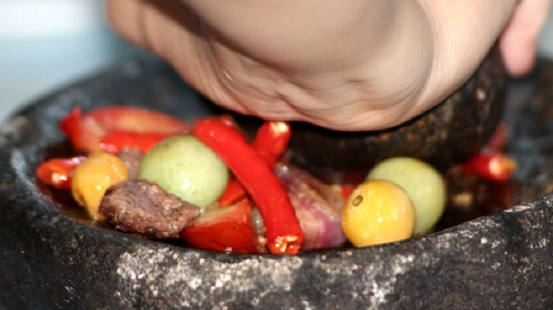
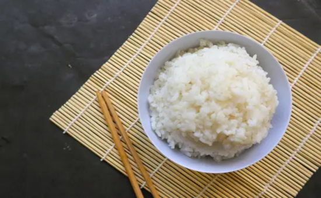

 Cara Mengatasi Masalah Umum Dalam Memasak Dan Solusinya Mengolah hidangan lezat bukanlah hal yang selalu mulus. Tidak peduli seberapa berpengalaman Anda, kadang-kadang masalah muncul di dapur yang dapat... Maulana Firmansyah 24 Agustus 2023
 Memilih Nasi yang Tepat untuk Hidangan Makanan: Menyelaraskan Rasa dan Tekstur Nasi, sebagai makanan pokok utama di Indonesia, memainkan peran penting dalam setiap hidangan. Di Jawa Barat, nasi tidak hanya berfungsi sebagai pendamping... Maulana Firmansyah 24 Agustus 2023
Cara Menyajikan Hidangan dengan Tampilan yang Menarik Tidak hanya tentang cita rasa yang lezat, tetapi juga tentang pengalaman visual yang memukau. Penyajian yang apik tidak hanya memperkaya pandangan mata, tetapi... Maulana Firmansyah 24 Agustus 2023
10 Tips Memasak Untuk Pemula Memasak memang kegiatan yang menyenangkan. Akan tetapi bagi para pemula tentu banyak hal yang perlu dikuasai... Ari Cakra Kurniawan 18 September 2023
Tips Memasak Cepat Untuk Hidup Yang Sibuk Hal ini akan membantu agar urusan memasak sampai aktivitas lainnya bisa terpenuhi sesuai rencana. Bagi orang yang sibuk bekerja... Ari Cakra Kurniawan 18 September 2023
Tips Memasak Sayuran yang Lezat dan Nutrisi Mengolah sayuran tidak bisa dilakukan asal-asalan. Sebab, proses yang dilakukan secara tidak tepat dapat menurunkan kandungan gizi yang ada di dalamnya. Proses pemanasan terlalu lama, misalnya... Ari Cakra Kurniawan 18 September 2023